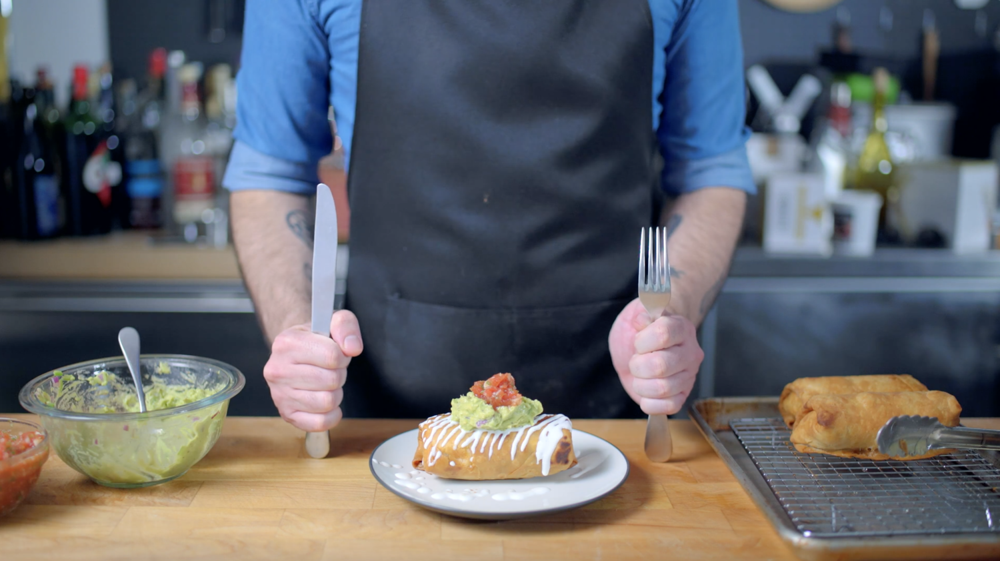

Chimichanga Recipe

Description
Chimichangas are basically deep-fried burritos
Ingredients
Taco Seasoning/Sauce
- 3 dried ancho chilies
- ½ small onion, halved
- 3-4 cloves fresh garlic, crushed and peeled
- 5 dried hot chilies
- 1 large can whole tomatoes
- ½ tsp paprika
- ½ tsp oregano
- 3 tsp whole cumin
- 1 chipotle in adobo (optional)
Shredded Chicken:
- 5 boneless chicken thighs
- Kosher salt
- Freshly ground pepper
- 2 Tbsp vegetable oil
Salsa:
- 28oz can plum tomatoes, drained and deseeded
- ½ small onion, quartered
- 1 clove garlic, chopped
- Cilantro
- Kosher salt
- Freshly ground pepper
- Lime juice
Honduran Crema:
- ½ cup sour cream
- ½ lime, juiced
Guacamole:
- 1 large avocado
- ½ lime, juiced
- 1 clove garlic, crushed
- ¼ of 1 small red onion, finely minced
- 1 tsp freshly ground cumin
- 1 jalapeno, minced (optional)
- Freshly ground pepper
- Kosher salt
Tortilla:
- 300 grams all-purpose flour
- 50 grams shortening
- 200 ml warm tap water
Chimichanga filling:
- Shredded chicken
- Refried beans
- Shredded cheese
Slurry (to seal chimichangas):
- 1 Tbsp flour
- 3 Tbsp water
Deep Frying:
Steps
Taco Seasoning/Sauce:
- Start by dry roasting the whole cumin until fragrant. Grind in a spice grinder. Toast the chiles (ancho & hot chiles) in the same pan over medium heat for 1-2 minutes - until fragrant but not smoking. Kill the heat and cover the chiles with water and place a lid on top. Let the chiles sit for 10 minutes until soft.
- Once the chiles are completely soft, carefully pour the chiles along with their liquid into a high-power blender with half a small onion (cut in half). Add two canned tomatoes, 3-4 medium cloves of garlic, ½ a teaspoon each of paprika and oregano, 2 teaspoons of the freshly ground cumin from earlier, 1 adobo chipotle from a can (optional), and a sprinkle of kosher salt and freshly ground pepper.
- Blend all together on high speed until it’s completely smooth, as you don’t want any chunks of dried pepper. Taste for seasoning. If it’s too spicy, add two more tomatoes and blend to balance the heat out.
Chicken:
- Start by patting dry 5 boneless skinless chicken thighs and seasoning with salt and pepper. Sear over medium-high heat in 2 tablespoons of vegetable oil in a high rimmed saucepan.
- Once the chicken has a nice color on both sides, add 1 ½ cups of the taco seasoning sauce, cover with a lid, lower the heat and let it braise for about 30 minutes. During this time feel free to prepare the chimichanga accompaniments.
- After 30 minutes, remove the lid and let the sauce cook down until nice and thick.
- Shred (or chop) the chicken right in the pan and toss in the sauce before setting it to the side to cool.
Salsa:
- In a food processor place a 28oz can of plum tomatoes (drained & deseeded), ½ jalapeno (chopped), ½ a small onion (quartered), 1 clove of garlic, a few leaves of cilantro, a sprinkle of kosher salt and freshly ground pepper, and a squeeze of lime juice.
- Use quick short pulses to chop everything. Scrape down the sides of the bowl and chop again to make sure everything is chopped down to the desired consistency. Cover and refrigerate until ready to use.
Honduran Crema
- In a small bowl, combine ½ cup of sour cream with half the juice of a lime.
- Whisk together until homogeneous then pour into a tiny squeeze bottle to drizzle on top later on.
Guacamole
- Into a small bowl goes the flesh of 1 large ripe avocado with half the juice of a lime, 1 small crushed clove of garlic, a quarter of 1 small red onion finely minced, 1 teaspoon of the freshly ground cumin, a minced jalapeno pepper (optional), a few twists of freshly ground pepper and a sprinkle of kosher salt.
- Mash together using a fork until the consistency of choice is reached and using a tortilla chip for a taste test.
Tortilla:
- In a food processor goes 300 grams of all-purpose flour and 50 grams of room temperature shortening (cut into small pieces). Pulse together about 15-20 times, until it forms a mixture similar to wet sand.
- With the food processor running, add 200 milliliters of warm tap water in through the feeding tube, letting the machine continue to run until a ball of dough forms.
- Once a ball has formed, stop the processor and remove the warm, sticky dough. Knead for a couple of seconds to make sure everything is evenly incorporated.
- Then weigh the dough in order to precisely divide the dough into six equal-sized balls. Once divided into balls, roll each piece taut and place on a well-oiled rimmed baking sheet. Dot the balls with oil to make sure they don’t stick to a loosely wrapped layer of plastic wrap on top. Rest at room temperature for 1 hour.
- One at a time, retrieve the balls of dough and dust them on both sides with all-purpose flour. Roll them out with a well-dusted rolling pin until thin and round as possible.
- Once rolled out heat a cast iron skillet to 400°F, or until you see little wisps of smoke coming off. Plop the dough onto the skillet and let sit for about 90 seconds, maybe longer or shorter depending on how hot the skillet is, but you want to see nice big bubbles before flipping and letting it sit for another 30-60 seconds. Stack the finished tortillas on a plate wrapped in a clean dish towel. This will help keep the tortillas warm and soft until ready to use them.
Assembly:
- Onto the lower third of the tortilla goes some of the shredded chicken, refried beans, and shredded cheese. Roll into a burrito. Use a slurry made from 1 tablespoon of flour to 3 tablespoons of water to brush down the outside edges of the tortilla. This will help hold the burrito together as it enters the deep fry.
- Over on the stovetop, heat a quart of vegetable oil to 350°F before dropping in the burrito and letting it fry for 2 minutes, or until deeply golden brown before flipping and frying for additional 1-2 minutes.
- Once each burrito has been fried, place onto a wire rack set in a rimmed baking sheet until ready to serve.
- At which point, place on a plate. Start with a drizzle of Honduran crema, top a generous dollop of guacamole, and finally a dollop of salsa. Enjoy!